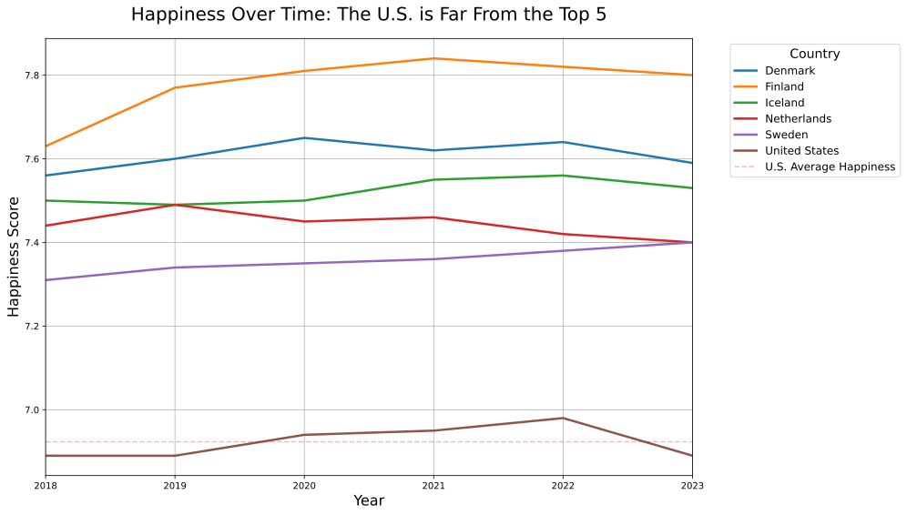

Why Is the U.S. So Unhappy?
Introduction
On March 20, 2025 (the International Day of Happiness) the 2025 World Happiness Report was released, ranking 147 countries based on survey responses and key well-being indicators. Once again, the United States ranked relatively low (24th) despite its global influence.
This project, which I completed for ME204, explores a simple but important question that this raised:
Why is the U.S. consistently less happy than the happiest countries, and can economic indicators help explain this gap?
Using seven years of global survey data from the World Happiness Reports, and socio-economic indicators from the World Bank API, I built a data pipeline to uncover what really explains national happiness. The U.S. consistently underperforms in global happiness rankings, and this project investigates why.
What you will find in this website
- The U.S. Lags in Happiness, Despite Its Wealth
- Governance Could Predict Happiness Instead of GDP
- The U.S. Governance Gap May Explain the Gap in Happiness
Methodology & Justification
To answer this question, I merged two global datasets:
- World Bank API — Economic and governance indicators
- World Happiness Reports — Happiness scores, rankings, and drivers
GDP (Current USD)
Total economic output of a country measured in current US dollars.Health Expenditure (% of GDP)
Percentage of a country’s GDP spent on healthcare services.Education Expenditure (% of GDP)
Percentage of GDP allocated to public and private education.Unemployment Rate (%)
Share of the labor force that is without work but actively seeking employment.Inflation (Annual %)
Year-over-year change in consumer prices, indicating cost-of-living trends.FDI Net Inflows (% of GDP)
Foreign direct investment received, expressed as a percentage of GDP.Population Total
Total number of people living in the country.Life Expectancy (Years)
Average number of years a person is expected to live from birth.Government Effectiveness
Perception of the quality of public services, policy implementation, and civil service.Rule of Law
Extent to which laws are fairly enforced and property rights are protected.Control of Corruption
Degree to which public power is exercised without corruption.Political Stability
Likelihood of political unrest or violence affecting governance.Voice and Accountability
Extent to which citizens can participate in government and express opinions freely.GDP Per Capita
Economic output per person, calculated by dividing GDP by population.
Year
The year the happiness data was collected.Rank
Country’s position in the global happiness ranking.Happiness Score
Overall score based on survey responses about life satisfaction.Social Support
Perceived availability of help from friends, family, or community.Freedom to Make Life Choices
Degree to which people feel free to choose how they live.Generosity
Willingness to donate or help others, often measured through charitable giving.Perceptions of Corruption
Public view on the prevalence of corruption in government and business.
I focused on six countries: the United States, and the five highest-ranking countries from the 2024 Happiness Index report:
- United States
- Finland
- Denmark
- Iceland
- Sweden
- Netherlands
These countries consistently appeared in all seven years of data and offer a contrast in policy and institutional design to the United States of America. They can offer reasons as to why the U.S. lags behind in happiness.
Data Collection and Processing
To obtain the World Bank indicators, I used the World Bank API to fetch up-to-date economic data for each country from 2018-2024. This automated data pull ensured the data is current and realiable allowing me to collect many indicators across multiple years without manual download or entry.
I downloaded the World Happiness Index Data directly from the website via CSV’s from 2020-2024. The data from 2018 and 2019 were downloaded from Kaggle, as it was not offered for download on the World Happiness Report Data Sharing site. However, to ensure validity, I cross referenced and checked every number to match up to the rankings both years on the World Happiness Report rankings/data, and they did, so I downloaded the csv’s for 2018 and 2019.
I then loaded all this data into a clean, relational SQLite database, making it easy to query and merge across sources.
To manage this data, I built a clean SQLite database and automated a pipeline to extract, transform, and load the information.
The diagram below shows the pipeline I built to collect, process, and analyse this data:

The U.S. Lags in Happiness, Despite Its Wealth
Despite its high GDP, the U.S. placed 24th in 2024 in happiness, far behind the top 5 happiest countries.

More importantly, the gap is growing. The happiest countries continue to sustain or increase their well-being, while the U.S. has trended downward in the rankings in the past few years. Why is this occuring?
Governance Could Predict Happiness Instead of GDP
There are many reasons why this is occuring. I strived to find some data driven posibilites that can help explain this. To figure out what may help drives happiness, I calculated correlations between every World Bank indicator and happiness score across all countries and years to see which indicators and variables most correlate to happiness.

A correlation coefficient ranges from -1 to +1. Values above 0.75 or below -0.75 are considered strong, meaning the variables move closely together. So the governance indicators with coefficients above 0.75 show a reliably strong link to happiness, and move wih it. However, it is worth noting that correlation doesn’t equal causation. Just because two factors move together doesn’t mean one causes the other. For example, even though strong governance and happiness are closely linked, this doesn’t prove that good governance directly CAUSES happiness. Other factors are likely involved. Still, high correlations suggest a meaningful relationship worth exploring.
The results show that the strongest correlations of happiness weren’t economic, rather they were all about how well countries are governed:
- Rule of Law (ρ = 0.93)
- Voice and Accountability (ρ = 0.87)
- Control of Corruption (ρ = 0.83)
- Government Effectiveness (ρ = 0.77)
- Political Stability (ρ = 0.70)
The U.S. underperforms on these governance metrics relative to the happiest countries, which helps explain its lower happiness scores, and what may consistently predict happiness
The U.S. Governance Gap May Explain the Gap in Happiness
To explore this further, use this interactive chart that lets you compare the average from 2018-2023 of happiness scores against any indicator score in the dataset to compare the United States to the happiest countries. You can switch the dropdown to governance metrics like Rule of Law or Voice and Accountability, and you’ll see a clear upward trend. Switch to economic metrics like GDP or Health Expenditure, and the pattern often disappears or reverses.
This chart helps see the relationship between happiness and all of the indicators collected. What can be conveyed from the chart is how consistently governance metrics outperformed economic ones. Besides government factors, even indicators like Freedom to make life choices and Social support showed stronger patterns than GDP or Health Expenditure. It made me rethink what development actually means, and how we measure success and happiness.
The four indicators with the strongest correlations (over 0.75 correlation coefficient) are:
- Rule of Law
- Voice and Accountability
- Control of Corruption
- Government Effectiveness
These all seem to be governance related, so since that mattered most, I looked at how the U.S. compared to the happiest countries on the four key governance indicators that correlated strongest with happiness.

Each plot compares happiness scores against the most correlated indicators, highlighting how the U.S. stacks up against the happiest countries.
Could weak governance be holding back U.S. happiness?
The pattern was clear across all four plots. The happiest countries consistently cluster in the upper right, with high governance quality AND high happiness. The U.S., marked in red, sits noticeably lower on both dimensions every time. It may not be about making, spending, and having money. Happiness could pertain to whether people trust their institutions, feel like the system is fair, and believe their government actually works for them.
Conclusion
So to answer the original question Why the U.S. far from the happiest, and can economic indicators explain this?
It may not fully be about national income or spending. It could very well be about governance accorning to this data. The happiest countries in the world aren’t just economically successful, but they’re well-governed, politically stable, and trusted by their citizens.
If the U.S. wants to climn the happiness rankings, having a great GDP shouldn’t just be the main focus. It will need to rebuild public trust, institutional accountability, and effective governance. The data displays how happiness could depend less on how much a country earns, and more on how fairly and effectively it is run.
This project shows how public datasets, when combined and analyzed thoughtfully, can reveal the deeper structures behind society’s well-being.